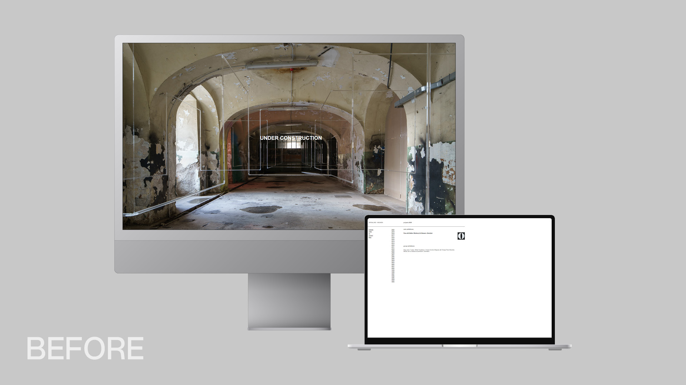
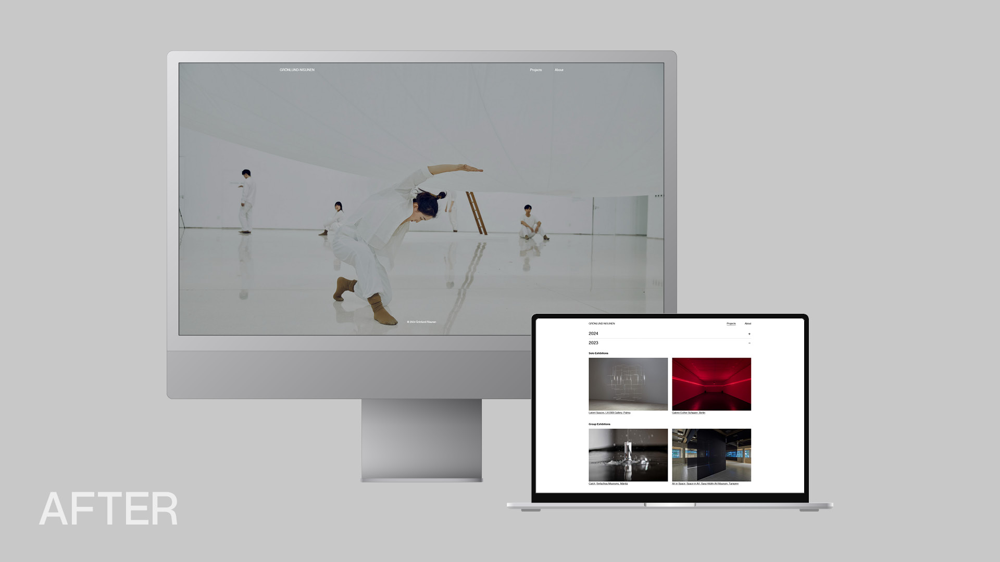
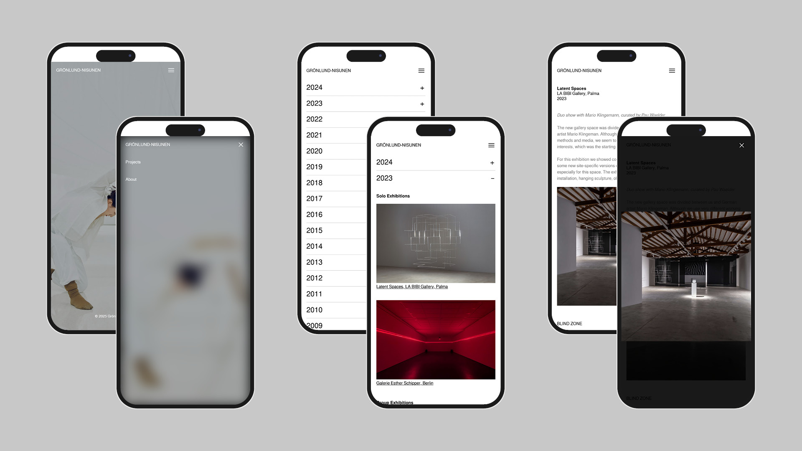
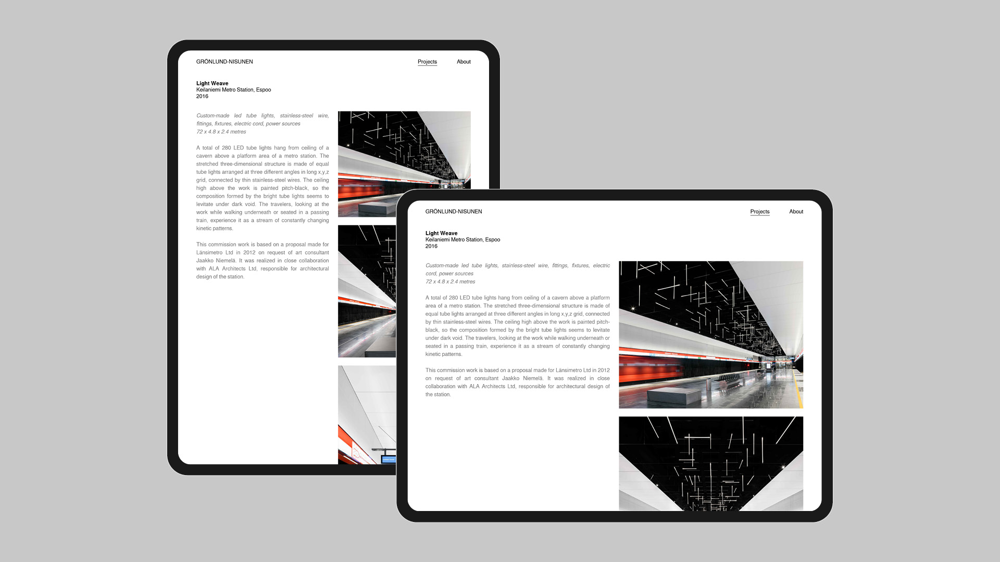
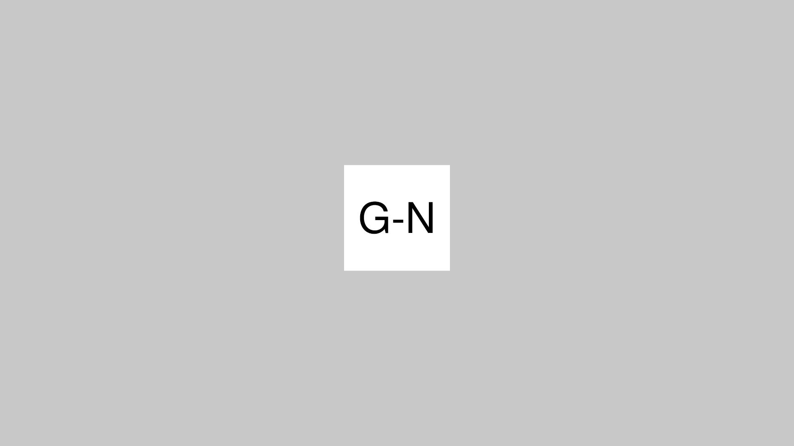

g-n.fi
Redesign and development of the artists’ website: g-n.fi
When I started this project in summer 2023, the old website’s content had not been updated for three years,
and its design has remained the same since its creation 20 years ago. The main goal was to make the website
responsive for mobile devices and to improve usability while maintaining its minimalistic visual appearance.



Redesign & Development
The accordion design offered a space-saving solution to list the artists’ career spanning over 30 years with
more than 120 documented exhibitions and public commissions. Furthermore, I created a responsive design for
different screen sizes. While the mobile view has only one column where pictures are arranged below the texts,
on the tablet and desktop view text and images are separated into two columns. In addition, font sizes change
dynamically which improves legibility especially on wider screens. For the front page, I created a slideshow
of outstanding images and videos of the artists’ latest works.
Other tasks included formatting images into web-ready files, editing the texts provided by the client, editing
and embedding vimeo videos, and designing a logo for the website's favicon.



Year
2024
Type
Web Design and Development
Client
Grönlund-Nisunen
Software
Visual Studio Code (HTML, CSS, JavaScript)
Adobe XD
Photoshop
Illustrator